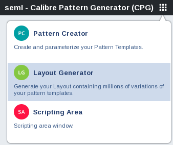
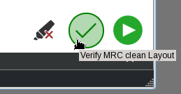

Creating a Layout With the Calibre Pattern Generator
Prerequisites
Knowledge of your test patterns and their planned placement in the layout.
Video
The video series “Getting Started with the Calibre Pattern Generator” describes and demonstrates the main functionality and key workflow steps to create new patterns and layouts.
The “Overview” video describes the main functionality and key workflow steps to create new patterns and layouts.

The “Demonstration: Creating a New Layout and Layout Configuration” video demonstrates the creation of a new layout and layout configuration file using the Layout Generator.

Procedure
- In Calibre WORKbench, invoke the Calibre Pattern Generator from the Litho > Calibre Pattern Generator menu item.
- Select
the Layout Generator (LG) tool by clicking the Tools icon on the
top right and choosing Layout Generator in
the menu. 
- Select Add Configuration > New.
Name the layout configuration and click OK.
Specify the properties of the layout configuration by clicking on
each and editing the values in the table.
Output File Name — The name and extension given to the file during layout generation.
Precision — Defines the database unit 1/PRECISION = 1dbu. Precision units are 1/um. Default value is 10000 (1/um).
User Units — The dimensional units applied to the parameters. The only supported value is nm (nanometers).
- Set the
general properties by clicking the General Properties gear
icon. Specify the label properties, gauge properties, and cell connectivity
by clicking on each and editing the values in the table.
Label Properties
Font Size — Label font size in user units.
Label Shift Y —Horizontal shift of the labels. Default value is 60.
Gauge Properties
Output GG File — Name and extension of the output gauge file. The default name is test.gg.
Gauge Layer — Layer number of the gauges in the layout file. The default layer for gauges is 0.
Connectivity
Connect Cells — Adds shorting bars to connect cells and reduce CD-SEM charging effects. After enabling Connect Cells, specify the following:
Connection Width — Width in user units of shorting bars between patterns.
Connection Layer — Connection layer number in the output layout file.
- Set the
grid properties by hovering over the General Properties gear
icon and clicking the Grid Properties icon.
Specify the grid properties by clicking on each and editing the
values in the table.
Row count and Column count — The number of grids in each row or column. Default value is 3 rows and 3 columns.
Grid size width and Grid size height — The width and height of each grid in user units. Default is 1500 user units.
Grid space width and Grid space height — The horizontal and vertical pitch of the grids in user units. The default is 3000 user units.
Row labels and Column labels — A list of label names applied to the layout rows and columns. Values can be specified as a space-separated list. The default is automatically-assigned labels.
Note:If no row or column labels are specified, the tool assigns row labels numerically starting with “1” and column labels alphabetically starting with “A”.
Allow Clipping — Enables clipping patterns that exceed the grid width or height.
- Set the
layer properties by hovering over the General Properties gear
icon and clicking the Layers Properties icon.
Specify the layer properties by clicking on each and editing the
values in the table.
Pattern Label Layer — The layout layer to write the pattern labels. The default value is 8.
Layout Label Layer — The layout layer to write the layout labels. The default value is 0.
Draw Extent — A checkbox that enables drawing cell extents to a layer. When enabled, the user may specify a layer to draw the extents to in Cell Extent Layer. The default behavior is no cell extent drawing.
Mapping — A table that maps layers in Pattern Creator and Layout Generator to layers in the output layout file.
- Load pattern
libraries and place patterns in grids.
- Load a pattern library by clicking + in the Libraries pane.
- Place a pattern in a grid by clicking on the pattern in the Libraries pane and dragging it to a grid.
- (Optional)
Place a pattern into multiple grids by hovering over the pattern
name in the Libraries pane and clicking the Add Multiple icon. In
the Repetition Dialog window, specify the cells for placement and
variables. After completing the settings, click OK to
place the patterns and labels. The following settings appear in
either the 2 Axes mode (default) or Free variation mode:
Starting cell — First grid cell for placing the selected pattern using a row, column format. The default is the lower left cell (0,0).
Expand Direction — The direction the subsequent patterns are placed. The default direction is horizontal.
Pattern Label — The label placed with the pattern in the cell. Values can be text or text combined with a property value.
To use a property value from the Pattern Properties window in a pattern label, add “$” to the property name. For example, if the property w is 100, the pattern label “line_$w” becomes “line_100”.
Pattern Orientation — Orientation of the pattern placement in the grid. Default value is 0 degrees.
Center Pattern — Centers the pattern in the grid. Default setting is on (centered).
Invert Pattern Tone — Switches all tones of the pattern. Default setting is off.
Expand Limit — The maximum number of cells to add.
Properties — List of available properties for the pattern and their initial values. To add a property to the Variating Properties table, hover over the property name and click the Variate property icon.
Variating Properties —Table of selected properties whose values are varied when placing the patterns in the cells. Specify the values using one of the following formats:
Min:Max:Step
Arbitrary — A list of comma-separated values.
Both — A list of comma-separated values and min:max:step statements.
- (Optional) To validate that the layout is MRC clean, specify
a design rule file.
- Hover over the General Properties gear icon and click the MRC (that is, DRC Properties) icon. Specify a Calibre nmDRC SVRF rule file.
- To run the DRC check, click the Verify
MRC clean Layout icon.
- Save the
layout configuration by hovering over the name of the layout configuration
and clicking the Save configuration icon.
- Generate
the layout and gauge files by clicking the generate Test
Layout icon. Click Yes to save
changes to the layout configuration file. Note:
For layouts with a large number of patterns, generate the test layout by typing “tlg config_file” in the Calibre WORKbench console.
Results
After completing the layout and gauge file generation, the files are saved to the work directory. Calibre WORKbench automatically opens the layout file and displays it in the layout viewer.